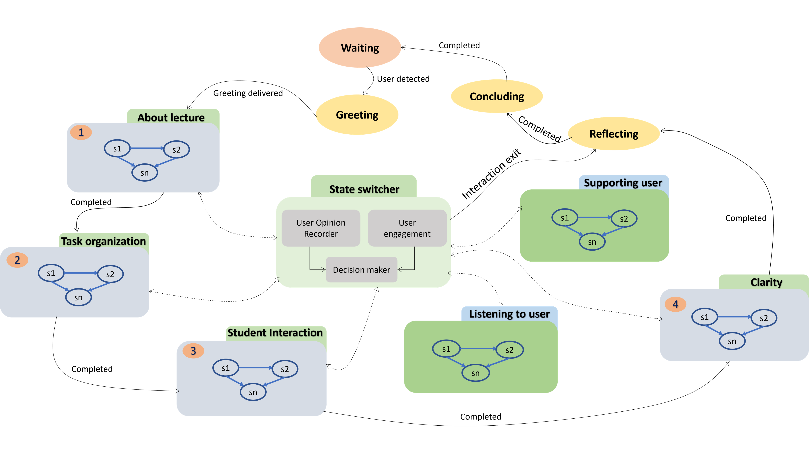
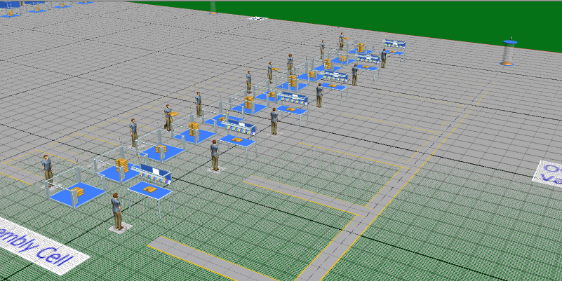

Tools: Python, Algorithms, Hierarchical State Transition Network
A short-term, extended task-oriented conversation system designed to gather user feedback about a lecture in a user-centered manner. The system leverages hierarchical state transitions to guide the conversation effectively.
How this system is different and serves your purpose?
A key advantage of this system is its adaptability to specific requirements. The pre-defined scripts utilized in the original implementation can be entirely replaced with your own custom scripts.
Key features include:

Tools: Discrete Event Simulation, Fuzzy inference system, Siemens Tecnomatix Plant Simulation
An electric transformer production line system was modeled as a digital twin using actual data such as operation time per part and machine failure rates. Bottlenecks and inefficiencies were identified through multiple simulations. An algorithm using multiple fuzzy logic controllers was implemented to monitor performance and optimize machine combinations.
System modeled in Siemens Tecnomatix Plant Simulation Software: